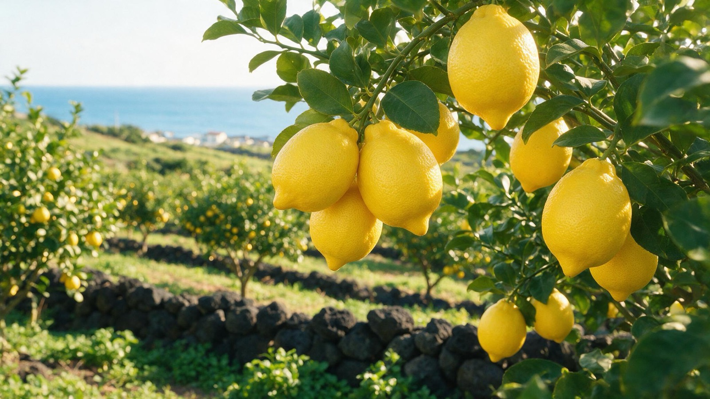

글로벌 유통 파트너
마케팅 가이드북
Edition 1.3 · 2026년 7월 · 한국어판
발행: VDVIA Inc. — LEMONDERMA 본사 마케팅팀
→ 오른쪽 화살표 키 또는 아래 다음 버튼으로 넘겨 보십시오.
Edition 1.3 · 2026년 7월 · 한국어판
발행: VDVIA Inc. — LEMONDERMA 본사 마케팅팀
→ 오른쪽 화살표 키 또는 아래 다음 버튼으로 넘겨 보십시오.
레몬더마는 한국의 비건 더마코스메틱 브랜드입니다. 모회사 지쉘바이오가 50개국 이상의 클리닉에 공급해온 엑소좀 연구를 일상 스킨케어로 옮겨 만들었고, 제조는 글로벌 1위 화장품 ODM인 COSMAX가 맡습니다.
이 책은 여러분에게 정답을 지시하는 문서가 아닙니다. 브랜드의 핵심은 본사가 지키고, 현지에서 무엇이 통하는지는 여러분이 가장 잘 압니다. 그래서 모든 항목에 세 가지 표시를 붙였습니다.
| 표시 | 뜻 |
|---|---|
| 🔒 고정 | 모든 시장에서 동일하게 적용됩니다. 변경이 필요하면 본사와 협의해 주십시오. |
| 🔓 재량 | 여러분이 결정합니다. 본사는 관여하지 않습니다. |
| 📎 참고 | 본사가 다른 시장에서 확인한 정보입니다. 참고 자료로 활용하십시오. |
국가별 시장·채널·규제 브리핑은 이 책에 담지 않았습니다. 해당 국가 담당 파트너에게는 별책 시장 브리핑을 함께 전달합니다.
스킨케어에는 오래된 믿음이 하나 있습니다. 효과를 보려면 자극이 있어도 더 강한 것을, 더 많이 발라야 한다는 것입니다. 레몬더마는 이 믿음이 사실과 다르다는 데서 시작했습니다.
자극이 느껴진다고 성분이 잘 작동한 것은 아닙니다. 강한 제품은 피부 장벽에 먼저 부담을 줍니다. 피부에 실제로 남는 것은 바른 양이 아니라, 피부 속까지 도달한 양입니다.
그래서 중요한 것은 성분의 세기가 아니라 전달입니다. 필요한 성분이 자극 없이 피부 속까지 전달되면, 피부는 억지로 자극받는 것이 아니라 안에서부터 좋아집니다.
레몬더마는 그 전달을 과학으로 풉니다. 모회사 지쉘바이오가 50개국 이상의 클리닉에 공급해온 엑소좀 연구를 데일리 스킨케어로 내려, 비건의 순함을 지키면서 작동하는 처방을 만듭니다.
브랜드 이름에도 같은 뜻이 담겨 있습니다. 자극적일 것 같은 과일(Lemon)로, 피부과학 영역(Derma)의 제품을 만든다 — 레몬을 선택한 이유는 Part 2에서 이어집니다.
레몬더마의 브랜드 슬로건은 두 개입니다.
기술·성분 축. 자연에서 온 것과 실험실에서 검증한 것이 만나는 자리.
효능 검증 축. 비건이면서 작동한다는 선언.
레몬더마는 일반 화장품이 아니라 더마코스메틱으로 설계되었고, 한국에서는 약국에서만 판매합니다. 같은 K-뷰티 브랜드라도 일반 화장품과 구분되는 지점이 바로 이 유통 자격입니다.
이 사실은 그대로 말할 수 있습니다. 다만 "한국에서"를 반드시 함께 붙여 주십시오 — 현지 소비자가 "우리 나라 약국에서 판다"로 오해하지 않도록 하는 것이 서로에게 안전합니다.
지금까지 레몬더마에 반응해온 고객은 대체로 이런 사람입니다.
30대 초반부터 50대 후반의 여성. 효과를 보려고 강한 성분을 써봤다가 피부가 힘들어진 경험이 있고, 그래서 이제는 순함을 먼저 봅니다. 그러나 잡티와 주름을 포기할 생각은 없습니다. 광고 문구보다 성분표를 직접 읽고, 자기 피부에 맞는 "순한데 진짜 되는" 하나를 찾고 있습니다.
이런 고객은 어느 나라에나 있습니다. 다만 여러분의 시장에서 어떤 고객층을 먼저 공략할지는 여러분이 결정하십시오 🔓 재량. 연령대·피부 고민·구매 동기의 우선순위는 시장마다 다르고, 그 판단은 현지에 있는 쪽이 정확합니다.
레몬은 먹을 때는 누구나 좋아하지만, 피부에 바른다고 하면 "자극적일 것 같다"고 생각합니다. 레몬더마는 바로 그 지점을 선택했습니다.
자극적일 것 같은 레몬이 실제로는 순하다 — 이것이 브랜드 이름이 하는 말입니다. 강해야 효과가 있다는 생각이 틀렸다는 것을, 제품 이름 하나로 보여줍니다.
레몬 껍질에는 햇빛과 만나면 피부를 자극할 수 있는 성분이 있습니다. 그런데 이 성분은 껍질에 몰려 있고 과즙에는 거의 없습니다 — 자몽이나 라임 주스보다도 적습니다.
제품에 들어가는 레몬 성분은 모두 제주 레몬의 과즙에서 옵니다.
비타민C와 구연산 같은 항산화 성분입니다. 그리고 레몬 엑소좀은 얇은 막이 이 성분들을 감싸고 있어서, 안의 비타민C가 잘 보존됩니다(학술적으로 확인된 사실입니다).
위 세 문장은 검증된 사실이므로 그대로 사용하실 수 있습니다. 다만 "레몬은 전혀 자극적이지 않다"처럼 넓게 확장하지는 말아 주십시오 — 위 이야기는 햇빛과 관련된 자극에 한정된 내용입니다.
레몬더마의 레몬은 제주도에서 자랍니다. 한국에서 가장 유명한 섬이고, 바다로 둘러싸인 따뜻한 화산섬이며, 한국 감귤이 자라는 대표적인 곳입니다.

제주를 이야기할 때는 어려운 설명이 필요 없습니다.
위도·기후·토양 같은 정보는 해외 고객에게 잘 전달되지 않습니다. "한국에서 가장 유명한 섬, 제주도에서 자란 신선한 레몬" — 이 한 문장이면 충분합니다. 그리고 말로 설명하기보다 사진으로 보여주는 것이 훨씬 잘 통합니다.
이 이야기는 세럼과 크림 양쪽에 씁니다. 레몬 유래 성분이 두 제품 공통이고, 과즙 유래 서사는 브랜드 단위의 정체성이기 때문입니다. 다만 감각과 전달에 관한 어휘(마이크로 크리스탈·작동감·"Feel the active")는 세럼 전용입니다.
"레몬이 피부에 자극적일 거라는 건 껍질 이야기입니다. 레몬더마는 제주 레몬의 과즙을 씁니다. 스킨케어도 같아요 — 강한 걸 많이 바르는 게 답이 아니라, 필요한 성분이 자극 없이 피부 속까지 도달하는 게 답입니다. 레몬더마는 지쉘바이오의 엑소좀 과학으로 그 전달을 풀고, 한국에서는 약국에서만 판매합니다."
콘텐츠로 길게 풀 때의 순서 📎 참고 — 위 세 문장 → 제주도 풍경·레몬 수확 사진 → 지쉘바이오의 엑소좀 연구 배경 → "그래서 이름이 레몬더마입니다."
SERUM OPENS, CREAM SEALS.
세럼이 열고, 크림이 잠근다
| Lemonshot 150 Exo:Booster Serum | Lemonshot Exo:Booster Cream | |
|---|---|---|
| 역할 | 피부를 연다 — 작동감이 있는 비건 글로우 부스터 | 수분과 윤기를 잠근다 — 가벼운 데일리 마감 크림 |
| 클레임 축 | 안티에이징 · 브라이트닝 · 모공 | 주름 · 피부 장벽 · 브라이트닝 |
| 핵심 성분 | 레몬 엑소좀 1억 입자 · 비건 마이크로 크리스탈 10,000ppm · 나이아신아마이드 2% · 아데노신 0.04% | 레몬 엑소좀 1억 입자 · 세라마이드 · 판테놀 · 나이아신아마이드 2% · 아데노신 0.04% |
| 사용감 | 가벼운 텍스처, 빠른 흡수. 바를 때 가벼운 작동감(아래 참조) | 답답하지 않고 메이크업 아래에도 잘 깔림 |
| 용량 | 50ml / 1.69 fl.oz | 50ml / 1.69 fl.oz |
전성분, 제품 사양, 인증 자료 등 상세 정보는 이미 전달드린 브로셔에 정리되어 있습니다. → LEMONDERMA 브로셔 열기
세럼을 바를 때 가벼운 따끔함이 느껴질 수 있습니다. 이것은 화학적 자극이 아니라 비건 마이크로 크리스탈이 피부에 길을 여는 물리적인 감각이며, 보통 5~10분 안에 가라앉습니다. 민감한 피부라면 격일로 시작하도록 안내하시면 좋습니다.
"바를 때 살짝 따끔한 느낌이 들 수 있어요. 이건 성분이 자극을 준 게 아니라 피부에 길이 열리는 감각이고, 5분에서 10분이면 사라집니다. 피부가 예민하시면 이틀에 한 번으로 시작해 보세요."
이 안내를 먼저 하는 것과 하지 않는 것의 차이는 큽니다. 미리 알면 고객은 "설명대로구나" 하고 받아들이고, 모르고 겪으면 "속았다"고 느낍니다. 반품과 낮은 평점의 상당 부분이 여기서 갈립니다.
이 감각을 한 줄로 표현할 때 본사는 다음 문구를 씁니다. 세럼 상세페이지에 사용하고 있고, 세럼 문맥에서는 자유롭게 활용하셔도 좋습니다.
"Feel the active. Not the burn."
작동은 느껴지되, 데이지는 않는다는 뜻입니다. 브랜드 슬로건이 아니라 세럼 전용 멘트이므로 크림 소재에는 쓰지 않습니다.
같은 제품이라도 고객에게 제안하는 방식은 하나가 아닙니다. 아래 세 가지 방법이 모두 유효하며, 어느 쪽을 쓰실지는 여러분의 판단입니다. 함께 쓰셔도 좋습니다.
| 방법 | 어떻게 파는가 | 어떤 고객에게 |
|---|---|---|
| A 2단계 세트 | 세럼 + 크림을 하나의 루틴으로 | 객단가를 올리고 싶을 때 |
| B 세럼 추가 | 쓰던 루틴 가장 앞에 세럼만 추가 | 쓰던 제품을 바꾸기 싫은 고객 |
| C 크림 단독 | 쓰던 크림을 레몬더마 크림으로 교체 | 부담 없이 시작하려는 고객 |
세럼과 크림을 하나의 2단계 시스템으로 제안합니다. "세럼이 열고, 크림이 잠근다"는 서사가 그대로 판매 논리가 됩니다. 세트 구매로 이어지고 객단가가 올라가며, 두 제품이 함께 소진되어 재고 회전이 균형을 잡습니다.
고객이 이미 쓰고 있는 스킨케어를 바꾸지 않아도 됩니다. 세럼을 기존 루틴의 가장 앞 단계에 추가하도록 제안하는 방식입니다.
세안 후 레몬더마 세럼을 먼저 바르면, 비건 마이크로 크리스탈이 피부에 길을 순하게 열어줍니다. 그 뒤에 쓰던 에센스와 크림을 그대로 올리면 영양분이 훨씬 잘 전달됩니다. 고객은 애정하는 제품을 버리지 않아도 되고, 매장은 기존 제품을 대체하는 부담 없이 한 개를 더 팔 수 있습니다.
이 사용법은 레몬더마 공식 사용 순서와 이미 일치합니다 — 세안 → 레몬더마 세럼 → (쓰시던 에센스·크림) → 레몬더마 크림으로 마무리. 크림까지 함께 쓰시면 가장 좋지만, 세럼 하나만으로도 루틴에 들어갑니다.
쓰고 있던 크림을 레몬더마 크림으로 바꾸도록 제안하는 방식입니다. 고객은 이미 크림을 쓰고 있으니 새로운 습관을 만들 필요가 없고, 제품 하나만 교체하면 됩니다.
크림 단독 판매의 강점은 가장 부담 없이 시작할 수 있는 제품이라는 점입니다. 세럼에는 바를 때 느껴지는 가벼운 작동감이 있는데, 크림에는 그 감각이 없습니다. 그러면서 미백·주름 이중 기능성(한국 식약처 등록)은 세럼과 똑같이 갖고 있습니다.
이런 고객에게 권하십시오.
크림으로 브랜드를 먼저 경험한 고객에게 나중에 세럼을 권하는 순서도 자연스럽습니다. 방법 C로 시작해 방법 A로 넓히는 흐름입니다.
몽골에서 가장 널리 알려진 의사이자 방송인이 정확히 위 방법 B와 같은 방식으로 레몬더마를 소개하며 판매하고 있습니다. "쓰시던 걸 바꾸지 말고, 이걸 제일 먼저 바르세요"라는 제안이 전문가의 입을 통해 나갈 때 특히 잘 받아들여졌습니다. 여러분의 시장에도 이런 목소리가 있다면 함께 검토해 볼 만한 접근입니다.
| 어휘 | 세럼 | 크림 |
|---|---|---|
| 레몬 엑소좀 · 1억 입자 · 제주 레몬 과즙 유래 | 가능 | 가능 |
| 미백·주름 이중 기능성 · 나이아신아마이드 2% · 아데노신 0.04% | 가능 | 가능 |
| 비건 마이크로 크리스탈 · 작동감(따끔) · "Feel the active" · 전달·흡수 표현 | 가능 | 사용 불가 크림 처방에 해당 성분이 없습니다 |
| 세라마이드 장벽 · 가벼운 마감감 | 해당 없음 | 가능 |
크림을 "진한 리커버리 크림"으로 소개하지 않는 편이 좋습니다. 실제 사용감은 가벼운 마감 크림이라, 기대와 다르면 만족도가 떨어집니다.
본사 현행 판매가는 세럼 $36.58 · 크림 $36입니다(2026년 6월 조정). 일반 K-뷰티 미드 구간보다는 위, 유럽 더마코스메틱 브랜드보다는 아래에 자리합니다.
현지 판매가와 프로모션 설계는 🔓 재량입니다. 단 하나, 가격 방어선은 지켜 주십시오 🔒 고정.
가격 방어선 — 세럼 $28 · 크림 $26 (현지 통화 환산 기준). 이 선 아래로 내려가면 브랜드 포지션과 다른 시장의 가격 질서가 함께 흔들립니다. 이 선 위에서는 자유롭게 설계하십시오.
레몬더마의 판매 포인트는 다섯 가지이고, 각각 답하는 질문이 다릅니다. 어떤 질문에 어떤 포인트로 답하는지 구분해서 쓰는 것이 중요합니다.
한 가지 성분으로 모든 것을 설명하려 하면 설득력이 약해집니다. 역할을 나누면 각각이 분명해집니다 — 브랜드를 왜 선택하는지는 레몬이, 효과의 근거는 식약처 등록 성분이, 사용 경험은 마이크로 크리스탈이, 신뢰는 연구 배경이 설명합니다.
어떤 포인트를 먼저 강조할지는 시장과 고객층에 따라 다릅니다. 참고할 만한 조합을 아래에 정리했습니다 — 그대로 따르실 필요는 없습니다.
④ 연구 배경 + ⑤ 유통 자격을 앞세우고, 의사·약사·에스테틱 전문가의 목소리와 결합. (몽골 사례가 이 조합입니다)
② 효능 근거(등록 성분과 함량)를 먼저 설명하고, ① 브랜드 정체성으로 기억을 남기고, ③ 사용 경험으로 체험을 만듭니다.
③ 사용 경험을 앞세워 "느껴지는데 자극은 없다"를 체험하게 하고, 후기로 ② 효능 근거를 뒷받침합니다.
준수 사항은 많지 않습니다. 브랜드를 통제하려는 것이 아니라 사실 관계, 법규, 브랜드 기준에 해당하는 항목만 정리했습니다. 아래에 없는 모든 것은 여러분의 재량입니다.
2026년 7월 개정 — 패키지 실물 색을 기준으로 전체 색상 체계를 다시 정의했습니다. 이전 자료의 색상값은 사용하지 마십시오.
브랜드 기준색은 패키지 실물의 Derma Yellow입니다.
#E6EE7A · RGB 230/238/122 · PANTONE 379 U
패키지 바탕에 쓰이는 브랜드 기준색입니다.
#59653c — 패키지 텍스트 전용입니다.
| 용도 | 값 |
|---|---|
| 배경 그라디언트 (전 매체 통일) | #fefcd0 (위) → #ffffff (아래) — 크림에서 화이트로. 웹·카드뉴스 구분 없이 이 값 하나만 사용합니다 |
| 박스·카드 테두리 | #ddea65 |
| 본문·제목·소제목 | #000000 — 순블랙. 회색 텍스트는 쓰지 않습니다 |
| 카드뉴스 제목 | #4b612d |
| 형광펜 강조 | #ddf746 투명도 30% — 글자 뒤에 깔아 주십시오(글자 위에 얹지 않습니다) |
| 수치·짧은 강조 문구 | #025200 — 짧게만. 문단 전체에 쓰지 않습니다 |
| 비강조 텍스트 | #000000 투명도 65% — 눌러야 할 텍스트에 |
| 경고 표시 | #e23b3b — 기능 표시 전용. 브랜드 컬러가 아닙니다 |
이전 색상값은 사용하지 마십시오. 아래 색상들은 패키지 실물색과 계열이 맞지 않아 2026년 7월에 폐기되었습니다. 기존에 만든 자료는 그대로 두시고, 새로 만드는 자료는 위 표의 값으로만 제작해 주십시오.
#F7DE5A · #FBE96B · #FEF8D9#eaffb7 → #ffffff — 전체 톤이 노란빛이 아니라 초록빛으로 읽힙니다#fefcd0 → #000000| 역할 | 서체 |
|---|---|
| 브랜드 문구 · 큰 제목 | Adobe Caslon Pro (세리프) — 제목은 Semibold |
| 소제목 · 본문 | Neue Haas Grotesk Text Pro (산세리프) |
| 한국어·현지어 | Pretendard 또는 Noto Sans — 자간 -0.04em |
https://use.typekit.net/ycy6gis.css를 한 번 불러오시면 됩니다.워드마크는 원형을 유지하고, 제공된 파일을 그대로 사용해 주십시오. SNS 이미지에서의 크기와 위치 기준은 다음과 같습니다.
| 콘텐츠 성격 | 위치 | 크기 |
|---|---|---|
| 브랜드가 공표하는 내용 수상·인증 안내 등 | 중앙 하단 | 이미지 가로 폭의 1/9 |
| 정보를 읽히는 콘텐츠 카드뉴스 등 | 상단 중앙 또는 좌측 상단 | 이미지 가로 폭의 1/9 |
판단 기준은 간단합니다 — "브랜드가 말하는 것"이면 하단에서 서명처럼 닫고, "정보를 읽히는 것"이면 상단에서 발신자를 먼저 밝힙니다.
로고, 제품 사진, 성분 이미지 등 공식 자료를 아래 드라이브에 모아두었습니다. 별도 요청 없이 자유롭게 다운로드해 사용하셔도 됩니다.
→ 브랜드 이미지 자료 드라이브 열기
레몬더마는 여러 시장에서 각기 다른 방식으로 판매되고 있습니다. 한국의 약국, 미국의 온라인 쇼핑몰, 태국의 오프라인 매장, 호주의 클리닉, 몽골의 전문가 추천 — 같은 제품이지만 잘 통하는 판매 방식은 시장마다 다릅니다.
본사의 역할은 이 시장들을 연결하는 것입니다. 한 시장에서 효과가 있었던 방법은 다른 시장에도 참고가 됩니다. 몽골에서 잘 통한 판매 방식(방법 B)이 이 가이드북에 실린 것처럼, 여러분의 시장에서 확인한 방법도 다음 개정판에 반영됩니다.
여러분은 혼자 이 브랜드를 파는 것이 아닙니다. 9개 진출국에서 같은 이름으로 함께 쌓고 있는 것입니다.
본사 마케팅팀은 여러분을 돕기 위해 있습니다. 성분이나 인증 자료가 필요하거나, 현지 캠페인을 설계하며 확인할 것이 생기면 편하게 요청해 주십시오. 함께 준비하겠습니다.
소재는 기다리지 않고 바로 쓰실 수 있습니다. 로고·제품 컷·성분 비주얼 등 공식 에셋은 드라이브에 열려 있으니 자유롭게 내려받아 사용하십시오.
→ 브랜드 에셋 드라이브 · 제품 브로셔
그리고 콘텐츠를 만들다가 이 가이드북에 없는 판단이 필요해지면, 그것도 알려주십시오. 그 질문이 다음 판을 더 좋게 만듭니다.
브랜드 슬로건 · "Where Nature Meets Science" / "Vegan that works"
("Feel the active. Not the burn."은 세럼 전용 멘트 — 크림·브랜드 단위에 쓰지 않음)
핵심 논리 · 중요한 것은 성분의 세기가 아니라 전달. 피부에 남는 것은 바른 양이 아니라 도달한 양.
30초 안내 문구 · "레몬이 피부에 자극적일 거라는 건 껍질 이야기입니다. 저희는 제주 레몬 과즙을 씁니다. 강한 걸 많이 바르는 게 아니라, 필요한 성분이 자극 없이 피부 속까지 도달하는 게 답입니다. 한국에서는 약국에서만 판매합니다."
핵심 판매 포인트 5가지 · ① 레몬·제주(브랜드 정체성) ② 나이아신아마이드 2%·아데노신 0.04%(효능 근거·한국 식약처 등록) ③ 비건 마이크로 크리스탈(사용 경험, 세럼 전용) ④ 엑소좀·지쉘바이오(연구 배경) ⑤ 한국 약국 전용 판매(유통 자격)
판매 방법 2가지 · A. 세럼+크림 2단계 세트 / B. 쓰던 루틴 가장 앞에 세럼 추가 — 기존 제품을 바꾸지 않고 한 개 더 판매
꼭 미리 말할 것 · 세럼의 가벼운 따끔함은 길이 열리는 감각, 5~10분 내 사라짐, 민감성은 격일 시작
준수 사항 · 가격 방어선 세럼 $28·크림 $26 · 크림에 감각 어휘 금지 · 미달성 순위·평점 금지 · 경쟁 브랜드 지목 비교 금지
비건은 원료의 출처에 관한 이야기이고, 효능은 어떤 성분이 얼마나 들어가 어떻게 전달되는지의 문제입니다. 레몬더마는 미백과 주름 개선에 대해 한국 식약처의 이중 기능성 등록을 받았습니다. 브랜드 슬로건이 "Vegan that works"인 이유가 여기 있습니다.
레몬에서 피부를 자극할 수 있는 성분은 껍질에 몰려 있고, 과즙에는 거의 없습니다. 레몬더마는 제주 레몬의 과즙에서 온 성분만 사용합니다.
세럼의 가벼운 따끔함은 비건 마이크로 크리스탈이 피부에 길을 여는 물리적 감각이며, 화학적 자극이 아닙니다. 보통 5~10분 안에 가라앉습니다. 예민한 피부라면 격일로 시작하시면 됩니다.
엑소좀은 레몬더마의 정체성이자 모회사 지쉘바이오의 연구 배경을 보여주는 성분입니다. 미백·주름 개선의 근거는 나이아신아마이드 2%와 아데노신 0.04%(식약처 등록)입니다. 두 가지를 구분해 설명하시면 신뢰가 더 올라갑니다.
다릅니다. 추출물은 레몬에서 뽑아낸 액체 — 여러 성분이 섞여 녹아 있는 상태입니다. 엑소좀은 그 과즙 안에 원래 있던, 얇은 막이 성분을 감싼 아주 작은 입자만 따로 모은 것입니다. 액체에 녹아 있는 성분과 막에 싸여 보호된 입자의 차이입니다. 막이 있어서 안의 성분이 보호되고, 그래서 레몬더마가 말하는 "전달"과 이어집니다.
아닙니다. 세안 후 가장 먼저 레몬더마 세럼을 바르고, 쓰시던 제품을 그 위에 그대로 올리시면 됩니다. 피부에 길이 열린 상태라 뒤에 바르는 것들이 더 잘 전달됩니다.
같은 K-뷰티라도 레몬더마는 한국에서 약국에서만 판매하는 더마코스메틱입니다. 그리고 모회사가 50개국 이상의 클리닉에 엑소좀을 공급해온 바이오 R&D 회사입니다.
| 용어 | 뜻 |
|---|---|
| 엑소좀 (소포체 · EV) Citrus Limon Fruit Juice Vesicles | 레몬 과즙 안에 원래 존재하는, 얇은 막이 성분을 감싼 아주 작은 주머니만 골라 분리한 것. 막이 안의 성분(비타민C 등)을 보호합니다. 막에 싸인 입자이기 때문에 "전달"과 이어집니다. "1억 입자"는 이 입자의 수를 센 숫자입니다 |
| 레몬 과즙 · 레몬 추출물 Fruit Juice · Fruit Extract | 레몬에서 뽑아낸 액체. 여러 성분이 섞인 혼합물이며 막 구조는 없습니다. 엑소좀과의 차이는 막의 유무입니다 — 추출물은 성분이 액체에 녹아 있는 상태, 엑소좀은 막에 싸인 입자만 따로 모은 것입니다 |
| 비건 마이크로 크리스탈 | 피부에 미세한 길을 열어주는 광물 유래 성분(합성 광물 유리). 동물·해양 유래가 아닙니다. 세럼에만 들어갑니다 |
| NTA | 나노 입자를 세는 분석법. "1억 입자"의 근거가 되는 원료사 자료입니다 |
| MFDS 이중 기능성 | 한국 식품의약품안전처가 미백과 주름 개선 두 가지 기능성을 함께 인정한 등록 |
| ppm | 백만분율. 10,000ppm = 1% |
| 지쉘바이오 | 레몬더마의 모회사. 엑소좀 연구·생산 기업으로 50개국 이상의 클리닉에 공급 |
| COSMAX | 레몬더마를 생산하는 글로벌 1위 화장품 ODM 제조사 |
| K-Pharmacy | 한국 약국 유통 채널에서 판매되는 더마코스메틱 카테고리 |
궁금한 점이나 필요한 자료가 있으면 언제든 본사 마케팅팀에 말씀해 주십시오.
LEMONDERMA Global Distributor Marketing Guidebook — Edition 1.3 · 2026년 7월
발행 VDVIA Inc. 본사 마케팅팀 · 국가별 시장 브리핑은 별책으로 제공됩니다.